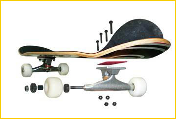

滑板部件 | 组装你的滑板 | 深入了解滑板板面 | 滑板桥的选择 | 注意安全
滑板部件

选择正确的设备来进行滑板运动是很重要的。滑板是由几种不同的部
件组成。部件由于滑板适用的地形和方式而不同。总的来说，滑板由
以下部件组成：
- 板面(deck)，1个，通常是用木板胶合而成，成型的时候构造了
脚窝和翘起来的板尾和板头。它们有很多不同的长度和宽度。
- 沙(griptape)，1张，粘在板面的上表面，用来增加与鞋底的摩
擦力，便于控制滑板。
- 桥(truck)，2个，是金属做成的部件，它被固定在板面下面，轮
子装在桥上。桥可以使板子转弯，而且可以调节它的转弯速度和角度。
- 轮子(wheel)，4个，是用聚氨酯做成的。轮子有不同的直径，形
状和硬度。小的轮子启动快，但是后劲不足，适合作技巧；大的轮子
可以比较容易的在不太平坦的地面上滑行。
- 轴承(bearing)，8个，每个轮子里面装有 2 个精密的轴承。轴
承有不同的精度和耐久性。一般轴承都有一个 ABEC 标识，从
ABEC-1 (最不精密) 到 ABEC-7 (最精密)。但是有的轴承没有 ABEC
标识，比如 Bones 轴承从来没有 ABEC 标识，他们的 Bones Swiss
Ceramics 却是最好的滑板轴承之一。